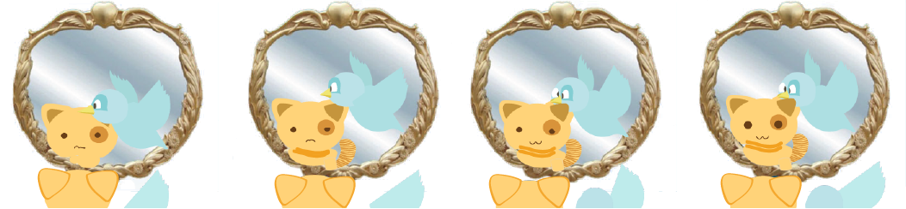
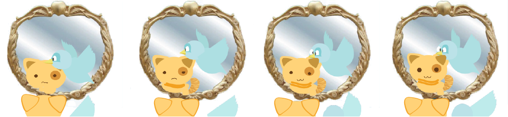
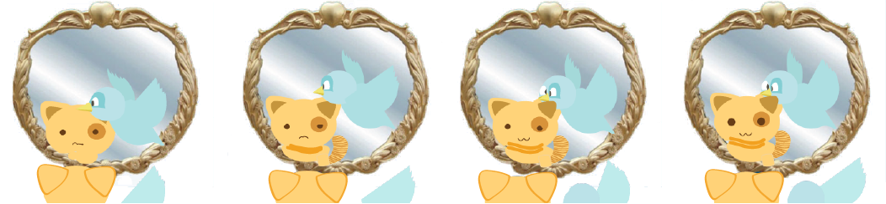

The Lion From Within
Chapter 7: The King and the Queen of the Jungle
Scene #4: Finally, she firmly stands on her beliefs on who she is and who her real family is.
Back to Pabu!
As Pabu entered their home she saw a mirror for the first time. It shined greatly and she was again, enticed by the mirror's luster. Flabby flew in. "You want to know why I'm so impressed with shiny things?" Pabu asked. "It's because I always see a lot of things in them. I see different things." Flabby answered "all I see is my reflection. This is me. Oh, hi me!" Pabu responded by saying: "I don't see my reflection, I see an image of my past. An image I wasn't able to see before, but now I do. I'm a princess, so they say - but for me, I'm just an ordinary kitten, who can't fly - can't swim, but now, I know where I belong. I belong here, where I know that I am loved."
This Browser does not support HTML 5

 
